0x00 前言
在《从零开始搭建 AI 环境》中，我们介绍过 Agent 的生态位：
| 大模型 | 供应商 | Agent | 擅长处理场景 |
|---|---|---|---|
| Claude | Anthropic | Claude Code | 编码 |
| Gemini | Gemini CLI | 视觉效果（图像等） | |
| GPT | OpenAI | Codex | 通用 |
| … | … | … | … |
其中 Claude Code 是 Anthropic 官方推出的编码专用 Agent。它围绕 Claude 模型深度优化，在代码理解、项目修改和上下文管理上，体验确实比很多通用 Agent 更稳。
下文简称 Claude Code 为 CC
但是 Anthropic 对国内用户并不友好。国内 IP / 用户访问 Anthropic 产品时，注册、登录、认证都很容易受限。
所以如果要在国内环境使用 CC，少不了一番折腾。
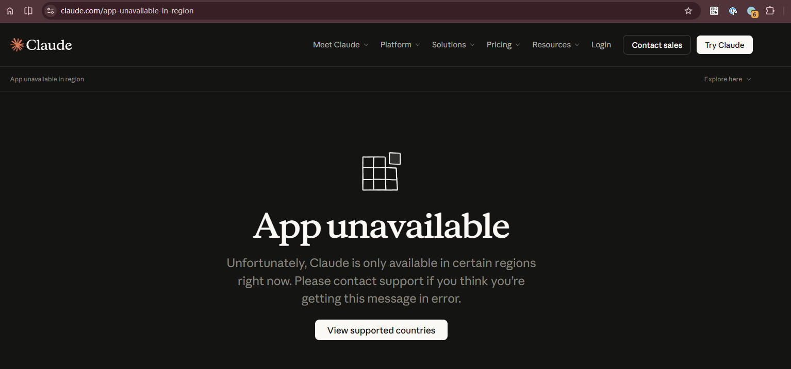
0x10 安装 Claude CLI
CC 的官方服务链路在国内基本不可用，因为 Anthropic 会对访问来源做限制，挂代理也未必稳定。
不过 CLI 本体仍然可以通过 npm 安装：
npm install -g @anthropic-ai/claude-code安装完成后，在终端执行 claude，即可启动 CC CLI：
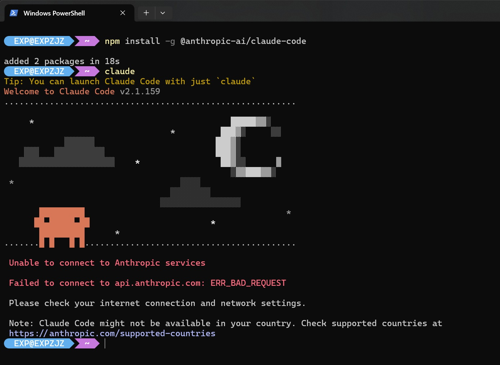
0x11 绕过登录认证界面
默认情况下，CC 启动时会走 Anthropic 官方链路做 OAuth 登录认证。但因为国内访问受限，通常会直接报错：
Unable to connect to Anthropic services
Failed to connect to api.anthropic.com: ERR_BAD_REQUEST处理方式也很简单：让 CC 跳过官方登录引导。
CC 启动时会检查配置文件 ~/claude.json。如果配置里声明了 "hasCompletedOnboarding": true，它会认为初始化引导已经完成，于是直接进入工作界面，不再弹出 OAuth 页面：
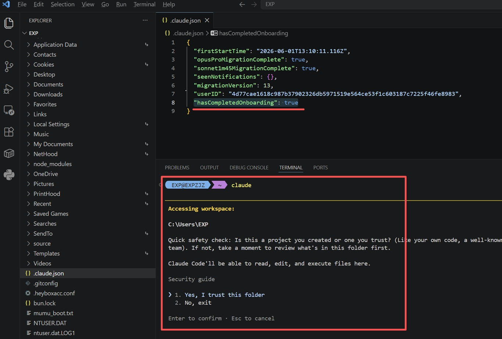
此时选择 Yes, I trust this folder，即可进入命令行界面：
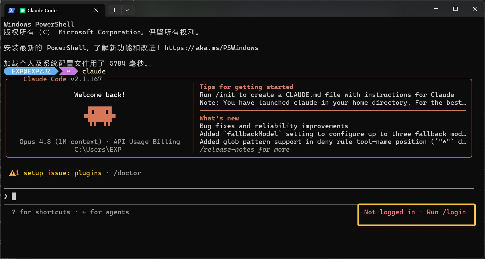
不过这时还不能直接正常调用模型。右下角会出现 Not logged in · Run /login 提示，意思是它希望你执行 /login，重新走官方登录认证。
不用理会，我们下面直接把 CC 接入自己的 new-api 网关。
0x12 对接 new-api
前面在《new-api 对接 Copilot 笔记》中，我们已经通过 Copilot 打通了 Claude 模型调用链路，因此这里可以直接复用。
修改 CC 的配置文件 ~/.claude/settings.json：
{
"env": {
"ANTHROPIC_AUTH_TOKEN": "sk-new-api-key-xxx",
"ANTHROPIC_BASE_URL": "http://localhost:3000",
"ANTHROPIC_DEFAULT_HAIKU_MODEL": "claude-haiku-4.5",
"ANTHROPIC_DEFAULT_HAIKU_MODEL_NAME": "Claude Haiku 4.5（Copilot）",
"ANTHROPIC_DEFAULT_OPUS_MODEL": "claude-sonnet-4.6",
"ANTHROPIC_DEFAULT_OPUS_MODEL_NAME": "Claude Sonnet 4.6（Copilot）",
"ANTHROPIC_DEFAULT_SONNET_MODEL": "claude-sonnet-4.5",
"ANTHROPIC_DEFAULT_SONNET_MODEL_NAME": "Claude Sonnet 4.5（Copilot）",
"ANTHROPIC_MODEL": "claude-haiku-4.5"
},
"autoUpdatesChannel": "latest",
"includeCoAuthoredBy": false
}注意：
ANTHROPIC_BASE_URL与 OpenCode 的baseURL不同，末尾不需要带/v1- Haiku、Sonnet、Opus 是 Claude 的三档模型名称，但 CC 不会自动按强弱切换，具体使用哪个取决于当前配置和命令行为
- 由于 Copilot 没有提供 Opus 模型，这里用 Sonnet 4.6 代替 Opus 档位
CC 面向 Claude 模型设计，原生使用的是 Anthropic 协议，若想使用 Claude 以外的大模型，需要模型本身支持 Anthropic 协议
配置完成后，在终端再次运行 claude。此时不再需要官方登录页，而是直接进入对话界面。
可以和大模型交互测试一下：
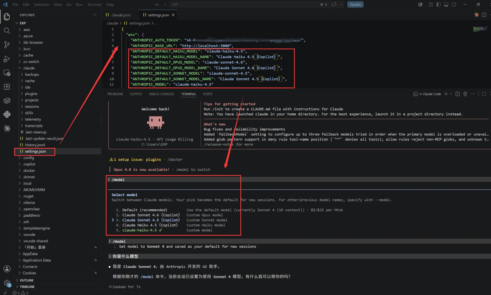
0x13 cc-switch 一键配置
如果觉得手写配置文件麻烦，可以用 cc-switch 直接生成。
先在 cc-switch 顶部选中 Claude Code，然后点击右上角的 + 添加模型供应商：
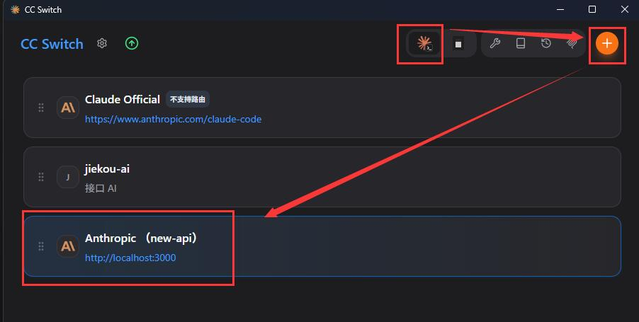
参考下图配置即可：
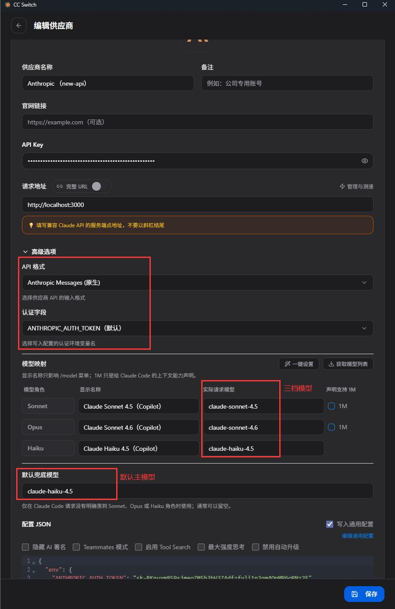
保存后，cc-switch 会自动把配置同步到 ~/.claude/settings.json。
重启 CC 即可生效。
0x20 安装 Claude Desktop / Cowork
前面安装的是 CC 的命令行版本。除此之外，Anthropic 还提供了 Desktop 桌面版，也就是带 GUI 的 Claude Code。
Desktop 里用于任务协作的模式叫 Cowork，安装包只能从 官网 下载。
由于 Anthropic 会检测代理环境，下载前最好把代理切换到系统全局模式，否则国内无法下载
下载得到的 Claude Setup.exe 只是一个在线安装器。首次运行时，它可能会要求开启 Windows 开发者模式。
开关入口在 设置 -> 系统 -> 开发人员模式：
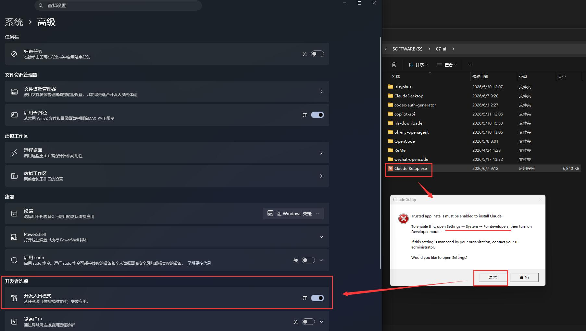
开启后重新运行 Claude Setup.exe，安装器会继续自动下载并安装 Desktop：
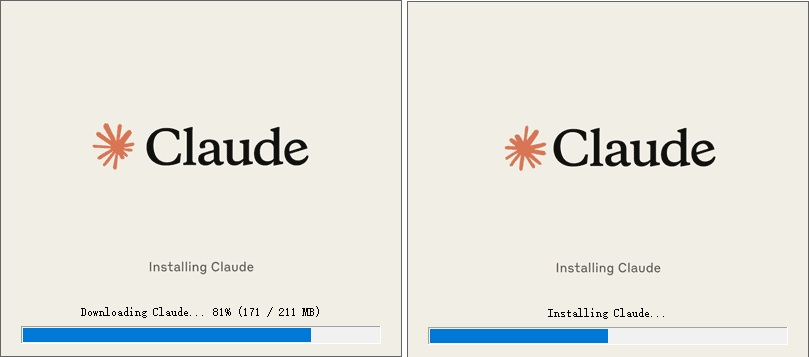
看到下面这个登录界面，就说明 Desktop 已经安装成功。不过我们没有 Anthropic 官方订阅，因此这里暂时无法直接登录使用：
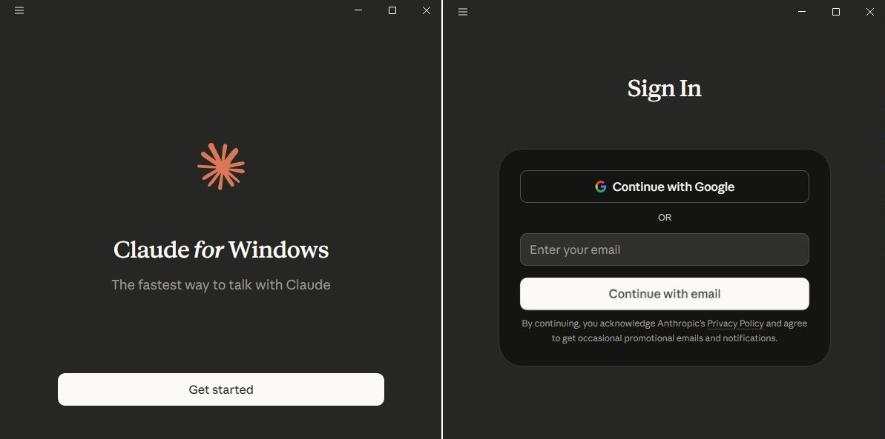
安装完成后，可以把 Windows 开发人员模式重新关闭
0x22 cc-switch 一键接入 new-api
Claude Desktop 的配置比较繁琐，这里直接使用 cc-switch，把前面 Claude CLI 已经配置好的 new-api 供应商同步到 Desktop。
先在 cc-switch 左上角进入设置，把 Claude Desktop 的配置面板显示出来：
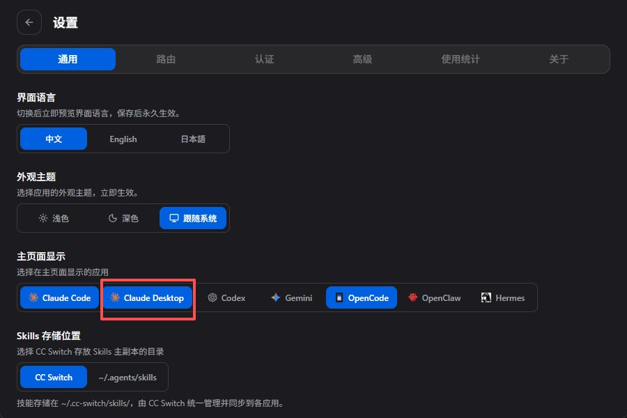
回到 cc-switch 主界面，顶部切换到 Claude Desktop，然后点击 将 Claude Code 中已有的供应商导入：
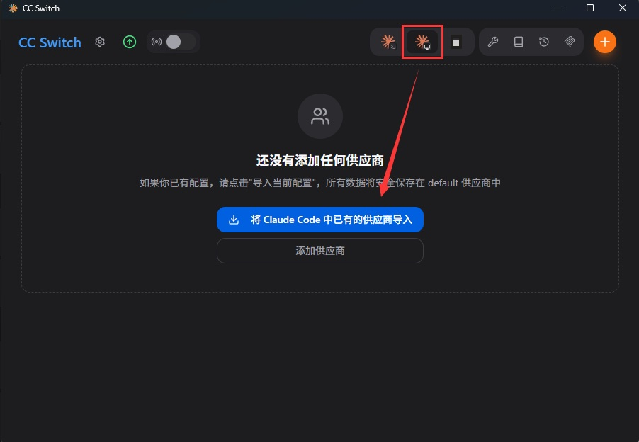
可以看到前面为 Claude CLI 配置的供应商已经被复制过来。点击 启用，cc-switch 会把这份配置写入 Desktop：
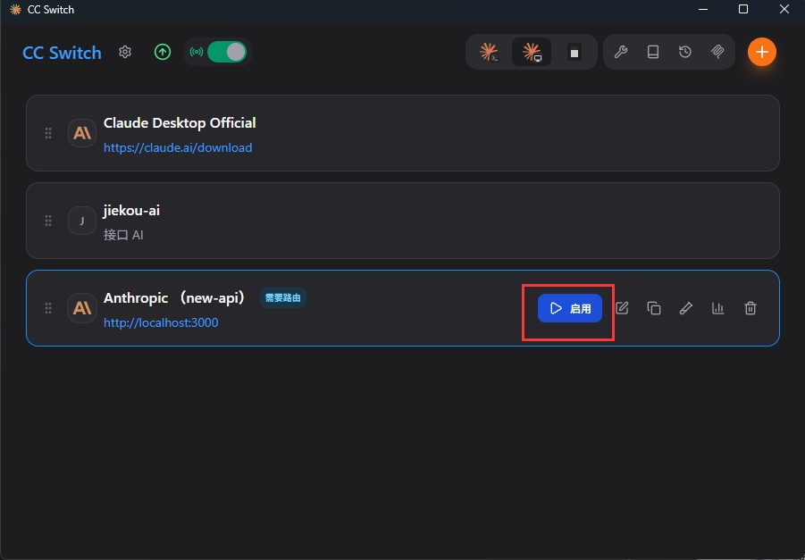
不过这里会看到一个 需要路由 的提示：
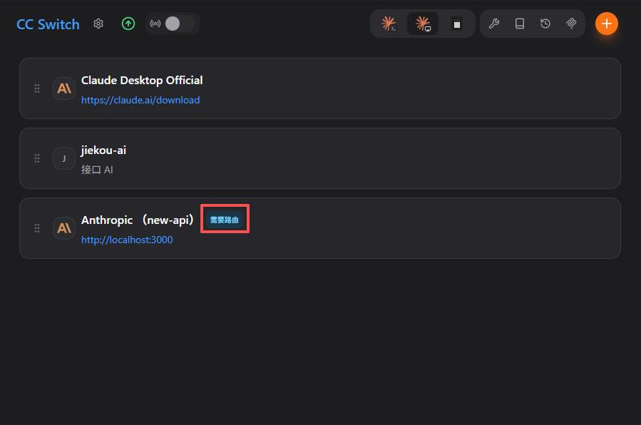
先按提示要求把路由打开，后面 FAQ 再解释为什么 Desktop 必须开启路由。
在 cc-switch 左上角进入设置，依次打开：路由总开关 -> Claude 路由开关。
保存后重启 Claude Desktop，即可通过 cc-switch 接入 new-api。
Desktop 左上角可以在两种模式之间切换，按需使用即可：
- Cowork 模式：类似 OpenCode 的协作工作空间，用于管理文件、项目、任务等
- Code 模式：更接近传统代码编辑器，专注于代码编辑、调试和执行
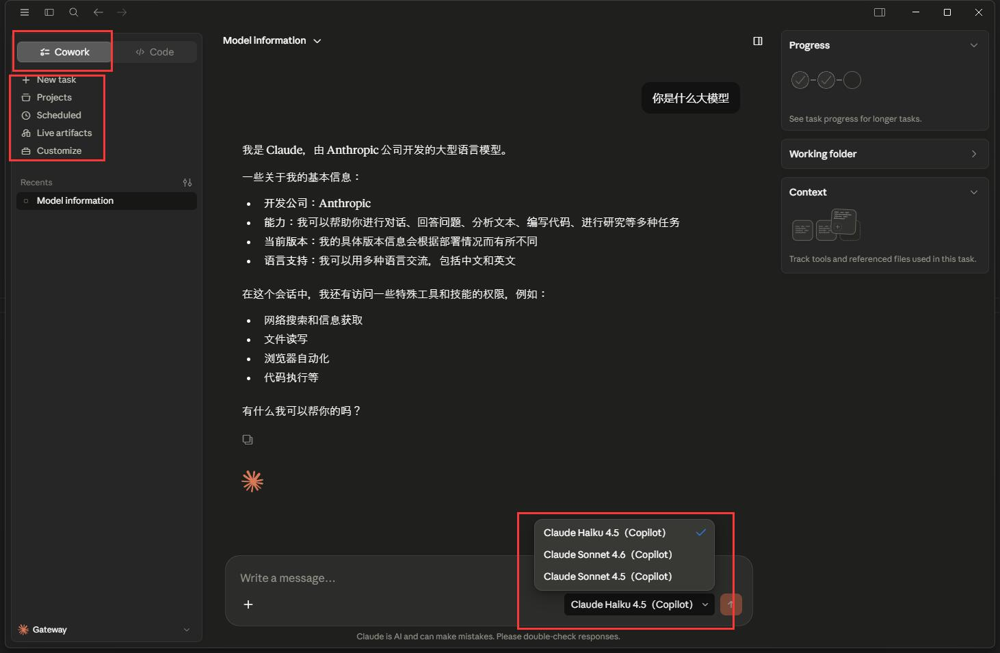
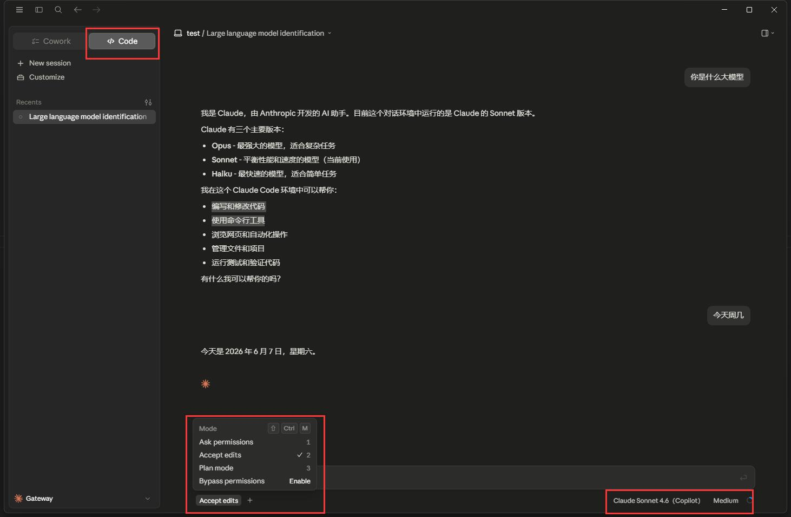
0xF0 FAQ
0xF1 为什么非要绕过登录
因为 Anthropic 对国内访问限制很严格，注册、登录、OAuth 认证经常不可用。这不是配置写错，而是官方链路本身不可达。
既然模型调用已经通过 new-api 转发到可用渠道，那么官方登录流程对当前使用方式就没有意义。跳过登录引导，直接接自己的网关，是最务实的做法。
0xF2 hasCompletedOnboarding 有风险吗
hasCompletedOnboarding 的作用只是告诉 CC：「初始化引导已经完成，可以直接进入工作状态」。
它本身不提供模型能力，也不会让你凭空获得 Anthropic 官方服务权限。真正决定能不能调用模型的，是后面 settings.json 里配置的 ANTHROPIC_AUTH_TOKEN 和 ANTHROPIC_BASE_URL。
而且官方自身在某些企业部署场景也支持这种方式，所以它几乎没有风险。
0xF3 CC / OpenCode 调用 Claude 模型有什么区别
如果两者最终都通过 new-api 转发到同一个 Claude 上游模型，那么底层模型能力是一样的。
区别在于：
- Claude Code 是 Anthropic 为自家模型深度调优的编码 Agent，工具链、上下文管理和编码提示词都围绕 Claude 优化，编码体验更贴近 Claude 的最佳形态
- OpenCode 是通用 Agent，优势是多模型适配和生态扩展，但对单个模型的优化不如官方 Agent 极致
简而言之：同样的 Claude 模型，CC 作为「官方出品」往往能发挥出更高的编码质量；OpenCode 则更适合作为多模型统一入口。
0xF4 为什么 Claude Desktop 需要开启路由
开启路由后，Claude Desktop 的请求链路会变成这样：
那么问题来了：为什么 Claude CLI 可以直接写 ANTHROPIC_BASE_URL，而 Desktop 却需要额外开启路由？
在 Desktop 左下角依次点击 Gateway -> Inference configuration -> CC Switch，可以看到 cc-switch 写入的第三方配置。
Desktop 不像 CLI 那样直接读取 ANTHROPIC_BASE_URL，而是要求配置一个 Gateway 网关。cc-switch 的本地路由在这里正是充当这个 Gateway 的角色。
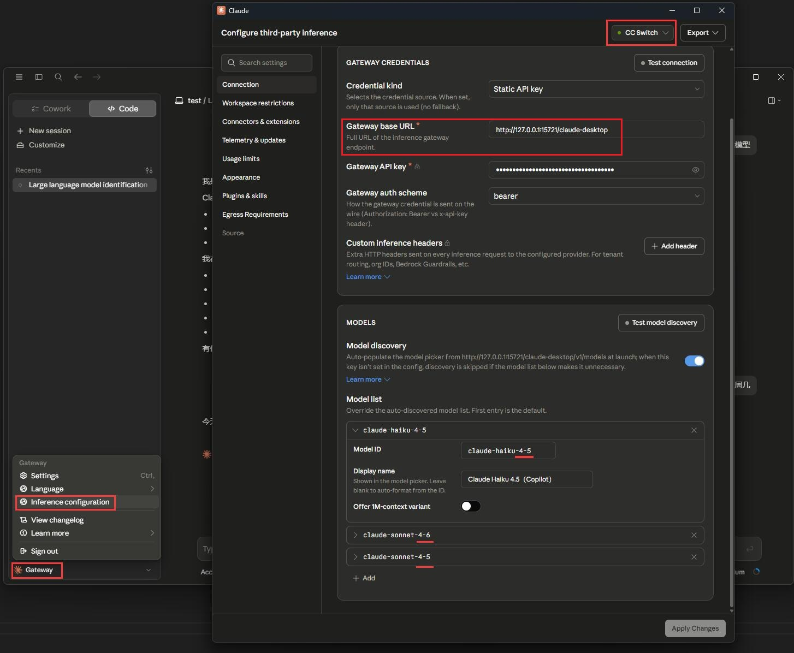
另一个问题是模型 ID。
Desktop 侧展示的是一套本地路由模型名，而不一定是上游供应商真实支持的模型名。
例如 Copilot / new-api 里真实模型名是 claude-haiku-4.5，但 Desktop 侧可能会使用 claude-haiku-4-5。
如果直接把 Desktop 里的 4-5 改成 4.5，反而会被 Gateway 拒绝：
message: Gateway rejected model "claude-haiku-4.5" (HTTP 400)
httpStatus: 400
requestUrl: http://127.0.0.1:15721/claude-desktop/v1/messages
probedModel: claude-haiku-4.5
responseBody: {"error":{"message":"无效的请求: Claude Desktop 模型路由未配置: claude-haiku-4.5 (Claude Desktop model route is not configured: claude-haiku-4.5)","type":"proxy_error"}}
endpoint: http://127.0.0.1:15721/
checkedAt: 2026-06-07T04:06:14.455Z因此，cc-switch 路由在这里至少承担了两件事：
- 作为 Desktop 所需的本地 Gateway，接住 Desktop 发出的请求
- 把 Desktop 使用的本地模型 ID，转换成 new-api / Copilot 实际支持的上游模型 ID